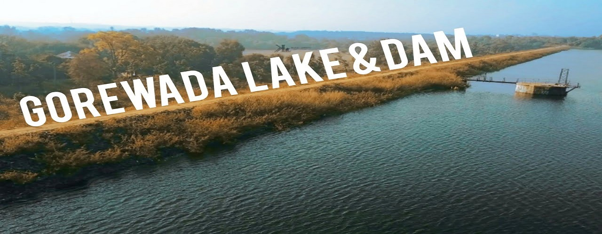

About Gorewada Lake
Gorewada Lake is situated at the north-west corner of Nagpur city, created with a 2,350-foot-long dam. Bordered by thick forests, the lake and its surrounding landscape serve as an important habitat for migratory avian species and diverse wildlife. The scenic sunsets at Gorewada Lake, visible from the waterworks section, make it a favorite peaceful retreat for nature lovers.
History
Developed in 1912 by the Water Works Department, Gorewada Lake was created as the primary drinking water source for Nagpur's population of 1.01 lakh at the time. It features an 11-square-mile catchment area originating from a water scheme launched in 1910.
Historically, the lake was known as Sita Gondi, named after a Gond woman, Sita Gondin, who originally constructed it during the Gond period. Over time, the lake came to be known after the nearby Gorewada village.
Major Attractions & Wildlife
- Avian & Wildlife Sanctuary: Surrounded by dense forest, the lake attracts numerous migratory bird species like wild ducks and resident wildlife.
- Nature Parks & Gardens: Features well-kept gardens around the lake, making it a popular picnic spot for nature enthusiasts.
- Gorewada Zoo & International Safari Park: Adjacent to the lake, the state government has developed a major Safari Park, International Zoological Garden, botanical park, and breeding center.
How To Reach
Gorewada Lake is well connected by road. It is located just 2 km away from Gorewada Road, taking around 5 to 7 minutes of travel time from the main junction. Local buses, auto-rickshaws, and private cabs are easily available from central Nagpur.